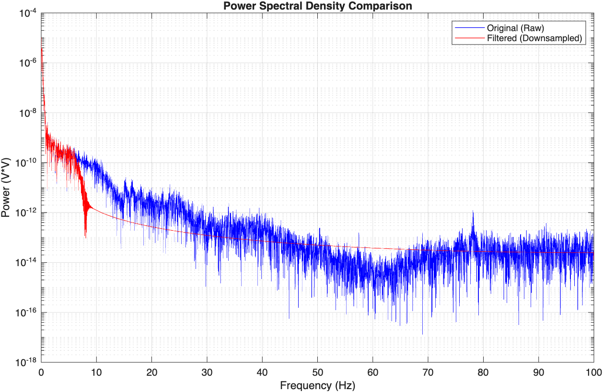
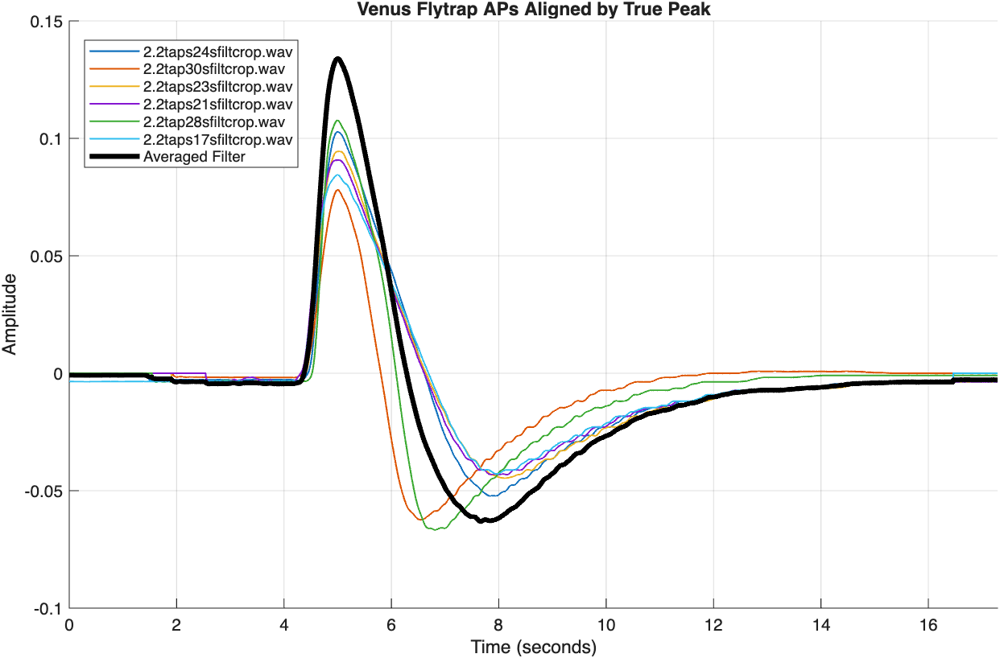
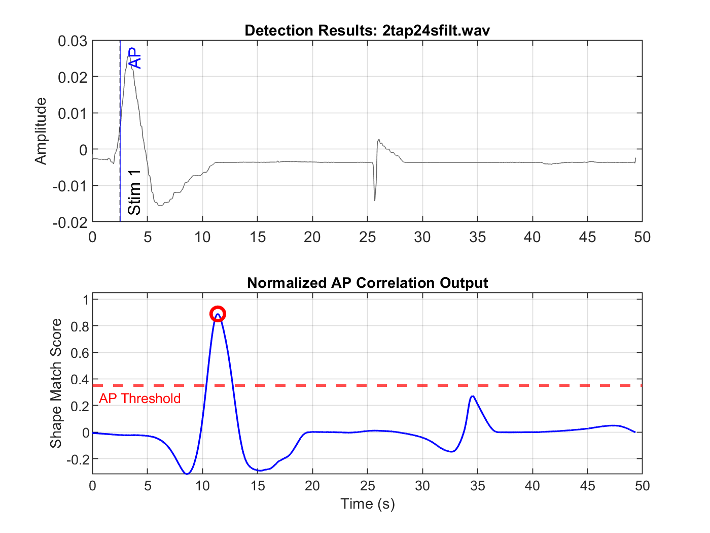

Venus Flytrap Electrophysiological Modeling
1. Overview
Project Scope: Investigated whether electrical signals (action potentials) generated by the Venus Flytrap can be reliably measured and modeled to predict action potential timing, trap closure, and digestive enzyme release.
Core Achievements: Developed a custom MATLAB signal processing pipeline using low-pass FIR filtering and normalized cross-correlation templates to achieve an overall event detection F1-score of 0.99 with no false negatives across 24 experimental trials.
2. Methodology
Action potentials were recorded from 5 healthy venus fly traps via a positive electrode gel lead secured to the stem and a reference ground electrode placed in the soil.
Trigger hairs were stimulated using a plastic rod while synchronized with slow-motion video to measure exact mechanical-to-electrical latencies. Stimulus intervals were systematically varied from single triggers to multi-trigger sequences (2 to 3 taps) at decreasing inter-stimulus intervals (ISIs) to analyze counting behavior and recovery dynamics.
3. Signal Processing Pipeline
Raw voltage files recorded via Spike Recorder were imported into MATLAB for preprocessing. Signals were downsampled to 200 Hz and passed through a custom 50th-order low-pass FIR filter to remove high-frequency baseline drift and noise without inducing phase distortion.


Power Spectral Density (PSD)
Figure 3: Power spectra before and after filtering, demonstrating effective attenuation of frequency components above 25–30 Hz.

Time-Domain Filtering
Figure 4: Comparison of raw and filtered time-domain recordings, highlighting baseline stabilization and distinct action potential deflections.
4. Event Detection
To isolate action potential characteristics, individual AP waveform events across trials were temporally aligned at their true peak and averaged to construct a simple normalized correlation filter template.


5. Physiological Response & Threshold Detection
Separate correlation filters were created for action potentials, trap closure, and digestive enzyme release. Thresholding these normalized outputs allowed the model to accurately classify whether consecutive stimulation events would trigger mechanical closure or remain open.

Closure Detection (3 Taps)
Figure 7: Multiple stimuli exceeding thresholds for AP generation, trap closure, and subsequent digestion markers.

No Closure (2 Taps)
Figure 8: Two-tap stimulation triggering AP thresholds while remaining below closure and digestion detection thresholds.
6. Generative & Predictive Modeling
A generative model was constructed to assemble synthetic electrophysiological signals based on user-defined stimulus counts and inter-stimulus intervals. When compared against empirical data, the model successfully captured temporal firing dynamics and waveform shape, though voltage magnitude scaling exhibited some variability.

7. Key Findings & Future Work
- Latency & Recovery: Average latency from stimulus touch to AP onset was measured at 230 ms, and the recovery threshold required for a second AP to trigger closure was determined to be 22 seconds.
- Model Performance: Achieved an overall F1-score of 0.99 across 24 experimental trials with zero false negatives and one false positive.
- Future Directions: Integrating Convolutional or Recurrent Neural Networks to replace correlation templates, and expanding plant bioelectric studies to different species.